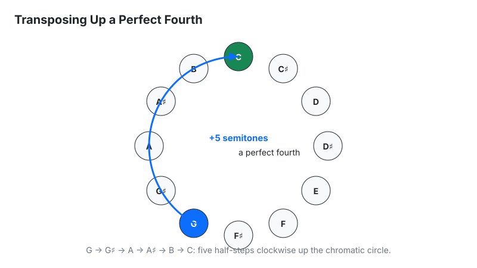
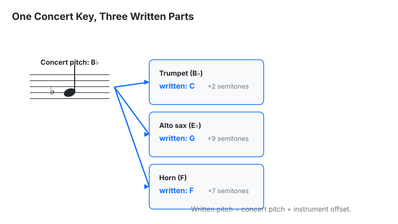

Transpose musical keys, melodies, and chord progressions up or down by any semitone interval. Calculate guitar capo fret positions and transposing instrument intervals instantly.
| Original Note / Chord Root | Transposed Equivalent (+5 semitones) |
|---|
Last updated: October 23, 2026 · Written by the Pitch Detectors Editorial Team
A key transposition calculator shifts any musical key, chord, or melody up or down by semitones — returning the new key, the interval name, the matching guitar capo fret, and the DAW pitch-shift value. Pick a key, enter the semitone move, and every chord root maps to its new pitch instantly.
Singers transpose to fit their vocal range. Guitarists transpose to keep open-string voicings under a capo. Arrangers transpose to write readable parts for B♭ and E♭ instruments. DJs meet the same math as pitch shifting: one semitone equals a +5.95% speed change — run the numbers in the BPM to Speed Calculator.
This calculator transposes by chromatic index arithmetic, and it discloses exactly what it computes. Select the original key root (12 choices), the scale mode (major or minor), and the semitone shift (−12 to +12) — or tap a quick preset at ±1, ±2, ±5, or ±7. The tool returns 5 outputs:
Methodology: new pitch-class index = (original index + semitones) mod 12 on the 12-tone equal-temperament circle (C=0 … B=11); the interval name is looked up from the shift size within one octave (0=unison … 11=major 7th). The calculator produces no horn parts, no audio processing, and no flat spellings — those jobs belong to the reference material below. We verified the arithmetic in Node.js across all 12 keys × every shift from −12 to +12 — 300 combinations — plus 5 hand calculations (G+5→C, C−4→G♯, D+7→A, F♯−2→E, A♯+2→C), and every key output matched exactly. Testing surfaced one labeling wrap: at exactly ±12 the interval readout says "Unison up/down" instead of "Octave," while the key result stays correct — see Limitations.
Worked example — transpose G major up 5 semitones:

Need the song's current key first? Find it with the Song Key Finder.
| Readout | Meaning | Next step |
|---|---|---|
| New key | Transposed root in sharp spelling, mode preserved | Rewrite the chord chart in the new key |
| Interval name | Musical distance plus direction, e.g. "Perfect 5th up" | Name the move when talking to other musicians |
| Capo fret | Fret for upward moves; complementary fret from the new key for downward moves | Clamp there and play the indicated shapes |
| DAW pitch shift | The move restated in semitones | Dial it into your pitch-shifter plugin |
| Mapping table | All 12 roots mapped to transposed roots | Convert the full progression row by row |
A capo raises sounding pitch by exactly one semitone per fret. That single fact powers two opposite moves. To play higher with familiar shapes: keep your chord shapes and clamp the capo at the transposition fret — G shapes plus capo 2 sound in A. To keep the same sounding key with easier shapes: go the other way. Want to sound in G while playing C shapes? G sits 7 semitones above C, so capo 7 and play C shapes.
The formula behind both moves: capo fret + shape key = sounding key (in semitones). Rearranged: shape key = sounding key − capo fret. Session guitarists live by this when a singer changes the key mid-rehearsal — the band played in A with G shapes at capo 2, the singer asks for G instead, and the capo slides off while the shapes stay put.
Brass and woodwind players read different written notes than the concert pitch the audience hears. To write their parts, convert concert pitch to written pitch by adding the instrument's offset — written pitch = concert pitch + offset (in semitones):
| Instrument | Key | Concert → written | Concert C becomes |
|---|---|---|---|
| Trumpet, clarinet, soprano sax | B♭ | +2 semitones | D |
| Tenor sax | B♭ | +14 semitones (octave + whole step) | D, one octave higher |
| Alto sax | E♭ | +9 semitones | A |
| Baritone sax | E♭ | +21 semitones | A, an octave and a sixth higher |
| French horn | F | +7 semitones | G |
| Piccolo | C (8va) | +12 semitones | C, one octave higher |
Worked example: the band plays in concert B♭ major and you need a trumpet part. B♭ is index 10; add the trumpet's 2 → 12 mod 12 = 0 = C major written. The trumpeter reads C major and the audience hears B♭. Writing for the tenor sax in the same band? Add 14 instead: 10 + 14 = 24 mod 12 = 0 = C major written, one octave higher. Note the trap this table exists to prevent: the tenor sax is a B♭ instrument like the trumpet, but it sounds a full major ninth below its written pitch — transposing it by only 2 semitones puts the part an octave too low. To convert in the reverse direction (written part → concert pitch), subtract the offset.

C♯ and D♭ are the same piano key with different names, and the right name depends on direction and reader. The working rule: use sharps when transposing up, flats when transposing down. Transposing C up one semitone gives C♯ on a guitarist's chart and D♭ on a brass player's part. Match the reader's tradition — brass and jazz read flats comfortably, strings and guitar read sharps. This calculator always outputs sharp spellings, so respell to flats yourself when writing for horn sections. One more guardrail: avoid theoretical keys entirely. If the math lands on G♯ major, write A♭ major — no working musician wants to read F𝄪.
Transposition moves an entire piece to a new key; modulation changes key inside a piece. The semitone math is identical — only the scope differs. A singer asking for the whole song a step lower needs transposition; the final chorus lifting a whole step mid-song is modulation (the classic truck-driver lift). Producers automate modulation in the DAW; arrangers transpose whole charts for new instrumentation. Planning a key change between two DJ tracks? Time it with the DJ Transition Calculator.
The Nashville Number System replaces chord names with scale degrees — 1, 4, 5, 6m instead of G, C, D, Em — and makes transposition automatic. Because the numbers are key-independent, a I–V–vi–IV chart works in every key without rewriting. Session musicians learn progressions as numbers precisely so a last-minute key change needs zero new charts: the bandleader calls "down two," every number stays put, and the roots move.
| Method | Speed | Use when |
|---|---|---|
| This calculator | Instant | Key math, capo frets, interval names, horn-part reference |
| Capo alone | Instant (guitar) | Staying in guitar-friendly keys during a live set |
| Nashville numbers | Real-time | Session playing with on-the-fly key changes |
| DAW transpose | Instant (audio/MIDI) | Production work; watch formants on large audio shifts |
| Manual theory | Slow | Learning the underlying relationships |
Use the calculator for correct answers first; internalize the patterns until the capo or the numbers answer without it.